Über den Menüpunkt…
1 WinLine ADMIN
1 Archiv
1 Archivverwaltung
1 Parameter
… können die Parameter des WinLine ARCHIV hinterlegt werden, wobei die Hinterlegung immer pro Mandant erfolgt.
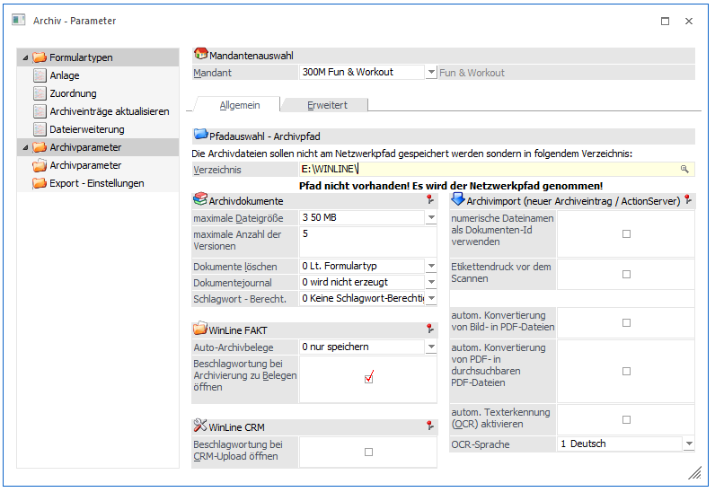
Mandantenauswahl
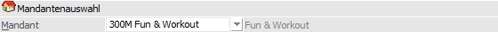
Ø Mandant
Aus der Auswahlliste kann der Mandant ausgewählt werden, für welchen die Parameter vergeben werden sollen. Nach Bestätigung des Mandanten, wird der Mandantenname angezeigt und die weiteren Felder zur Bearbeitung freigegeben.
Register "Allgemein"
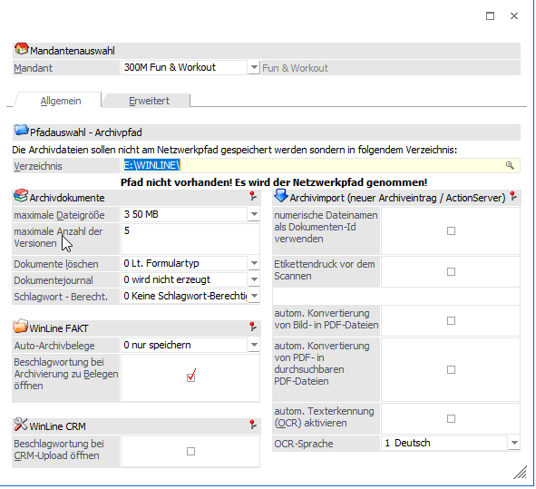
Pfadauswahl - Archivpfad
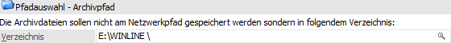
Ø Verzeichnis
Hier kann das Verzeichnis eingestellt werden, in dem die Archivdokumente (z.B. SPL-Dateien) abgelegt werden sollen. Findet die Speicherung der Archiveinträge im SQL-Server statt (Standard), so werden die Archivdokumente hier nur temporär (bis zur erfolgreichen Archivanalyse) abgelegt.
Achtung
Wird hier kein Laufwerk bzw. Verzeichnis angegeben, so werden die Archivdateien automatisch in das Serververzeichnis gestellt. Das gleiche gilt für den Fall, dass ein Verzeichnis angegeben wurde, welches es nicht gibt oder (derzeit) nicht gefunden werden kann. D.h. auch in solch einem Fall wird, anstatt des angegebenen Verzeichnisses, der Netzwerkpfad als Archivpfad verwendet.
Hinweis
Es darf kein Verzeichnis verwendet werden, das Sonderzeichen (? * - etc.) enthält. Wird dennoch ein Verzeichnis mit einem Sonderzeichen eingegeben, wird eine entsprechende Fehlermeldung ausgegeben und das Verzeichnis wird auf das aktuelle Programmverzeichnis zurückgesetzt.
Archivdokumente
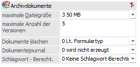
Ø maximale Dateigröße
Über die Auswahlliste kann ausgewählt werden, wie groß die Dateien sein können, die archiviert werden sollen. Es stehen die folgenden Auswahlen zur Verfügung:
ü 1 - 15 MB
ü 2 - 25 MB
ü 3 - 50 MB
ü 4 - 100 MB
Ø maximale Anzahl der Version
An dieser Stelle kann bestimmt werden, wie viele Versionen ein Archivdokument maximal aufweisen darf. Es sind maximal 99 Versionen möglich.
Hinweis
Sobald bei einem Archiveintrag die maximale Anzahl von Versionen erreicht wurde, wird beim erneuten Einspielen einer neuen Version die älteste Version gelöscht und der aktuelle Import als aktuellste Version gesetzt.
Ø Dokumente löschen
An dieser Stelle kann definiert werden, ob Archiveinträge über das Programm "Archiveintrag suchen" bzw. "Archiv Suche" gelöscht werden dürfen. Zur Auswahl stehen folgende Einstellungen:
ü 0 - erlaubt
ü 1 - nur Archivadministratoren
ü 2 - nicht erlaubt
Hinweis
Diese Einstellung wird mandantenspezifisch gespeichert. Die Archivsuchen arbeiten hingegen weiterhin mandantenübergreifend.
Ø Dokumentenjournal
Bei der Einstellung stehen die beiden Optionen zur Verfügung:
ü 0 - wird nicht erzeugt
ü 1 - Lt. Formulartyp (revisionssichere Archivierung)
Achtung
Wurde die Option beim Dokumentenjournal auf "1 - Lt. Formulartyp (revisionssichere Archivierung) gesetzt und Dokumente wurde bereits archiviert, ist eine Änderung der Einstellung nicht möglich. Ist beim Formulartyp eingestellt, dass ein Löschen nicht erlaubt ist, kann das Dokument nicht mehr gelöscht werden. Des Weiteren ist ein Ersetzen eines Dokuments nicht über die Archiv Suchen erlaubt. Die Anzahl der Versionen wir bei den Dokumenten außer Kraft gesetzt. Für diese Dokumente können beliebig (unendlich) viele Versionen existieren.
Hinweis
Diese Einstellung wird mandantenspezifisch gespeichert. Die Archivsuchen arbeiten hingegen weiterhin mandantenübergreifend.
Ist die Einstellung auf "1 - Lt. Formulartyp (revisionssichere Archivierung) eingestellt kommt der Hinweis, dass die Sofortanalyse aktiviert sein und die Archivierung in der Datenbank erfolgen muss.
Die Protokollierung erfolgt in Auditform und kann in der WinLine Start unter dem Menüpunkt Archivanalyse im Register "Auditjournal" ausgewertet werden.
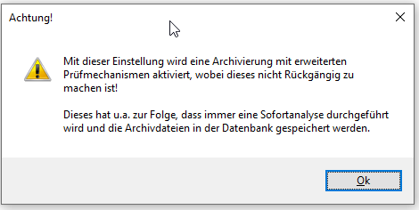
Ø Schlagwort - Berecht.
Über die Einträge der Auswahlliste kann bestimmt werden, ob zur Anzeige von Archivdokumenten eine Berechtigungsprüfung anhand der Beschlagwortung erfolgen soll. Folgende Einstellungen stehen zur Verfügung:
ü 0 - Kein
Schlagwort-Berechtigungsprüfung
Es erfolgt keine Prüfung auf Berechtigungen
die sich über die hinterlegten Schlagwörter ergeben würden.
ü 1 - Berechtigungsprüfung (vor
Dokument-Anzeige)
Vor der Dokumentenanzeige wird geprüft, ob das
Archivdokument Schlagwörter enthält, auf deren Stamm der Benutzer keine
Berechtigung hat. Ist dies der Fall, so wird das Dokument nicht angezeigt.
Ebenso können dadurch keine weiteren Aktionen (Dokument mailen, drucken,
bearbeiten, …) durchgeführt oder die Beschlagwortung dazu aufgerufen werden.
Beispiel
Im Personenkonto des Lieferanten "330001 - Allsport" ist ein Berechtigungsprofil hinterlegt, sodass diesen Datensatz nur bestimmte Benutzer sehen können.
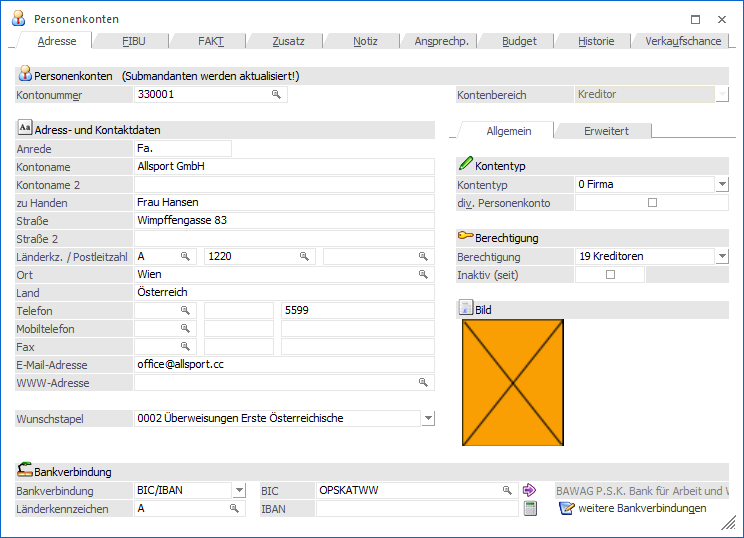
Berechtigungsprüfung (vor Dokument-Anzeige) ist aktiv.
Wird nun versucht ein Archiv-Dokument, in dem diese Kontonummer "330001" als Schlagwort hinterlegt ist, von einem Benutzer aufzurufen, der nicht im Berechtigungsprofil zugewiesen ist, erfolgt eine entsprechende Hinweismeldung:
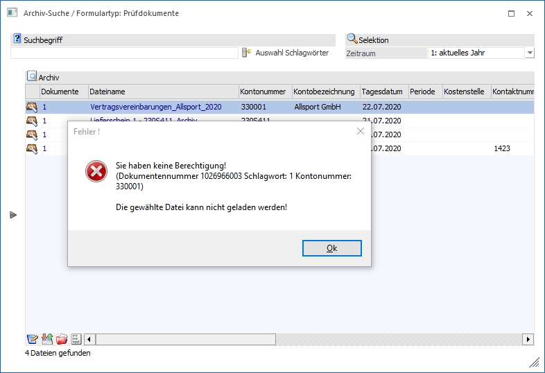
Hinweis
Die Einstellung der Berechtigungsprüfung wird mandantenspezifisch gespeichert. Somit kann gesteuert werden, dass Archivdokumente in einem Mandanten aufrufen werden können, und in einem anderen nicht, obwohl in beiden Mandanten keine Berechtigung für den Stammdatensatz vorhanden ist.
Hinweis
Für die Einstellung wird die WinLine ARCHIV II Lizenz benötigt.
WinLine FAKT
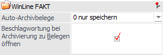
Ø Auto-Archivbelege
Über diese Option kann gesteuert werden, wie mit Autoarchiv-Belegen (die im Zuge des Belegdrucks in der WinLine FAKT erzeugt werden) im Archiv verfahren werden soll:
ü 0 - nur speichern
Mit dieser
Option wird nur der Auto-Archiveintrag erstellt. Damit ist zwar ein Verweis
zwischen Beleg und Archiv vorhanden, der Autoarchiv-Eintrag kann aber nur über
das Belegmanagement bzw. über den Belege-Menüpunkt aufgerufen werden - über die
Archivsuchen ist der Eintrag nicht einzeln aufrufbar.
ü 1 - beschlagworten
Mit dieser
Option, die nur dann gesetzt werden kann, wenn die WinLine ARCHIV II - Lizenz
vorhanden ist, wird der Autoarchiv-Eintrag auch mit dem für das Formular
hinterlegten Variablen beschlagwortet. Damit kann dieser Autoarchiv-Eintrag
nicht nur im Belegmanagement bzw. im Belege-Menüpunkt aufgerufen werden, sondern
steht im gesamten Archiv zur Verfügung. Mit dieser Option müssten Belege somit
nicht mehr doppelt archiviert werden.
Hinweis
Wenn die Option "Auto-Archivbelege" auf "1 - beschlagworten"
gesetzt ist, dann werden bei einem Reorg der erledigten / gelöschten Belege die
Autoarchiv-Belege nicht mit gelöscht.
Des Weiteren werden bei dieser
Einstellung in den Archivsuchen (Ausnahme "Archiv-Suche") nur noch die
Archivdokumente des aktuellen Mandanten angezeigt!
Hinweis
Für die Einstellung wird die WinLine ARCHIV II Lizenz benötigt.
Ø Beschlagwortung bei Archivierung zu Belegen öffnen
Durch Aktivieren dieser Option wird das Fenster zur Eingabe von Schlagwörtern geöffnet, wenn ein Dokument mittels Drag & Drop im Belegerfassen auf das Hauptfenster gezogen wird (nähere Information entnehmen Sie bitte dem Kapitel Dokumenten-Beschlagwortung).
WinLine CRM
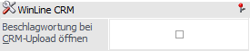
Ø Beschlagwortung beim CRM-Upload öffnen
Durch Aktivierung dieser Option wird beim Hinzufügen von einem oder mehreren Dokumenten in einen CRM-Fall das Beschlagwortungsfenster geöffnet. Sollte der Dateierweiterung ein Formulartyp zugewiesen sein, so wird dieser herangezogen. Die Vorbelegung aus dem Formulartyp wird für folgende Felder / Schlagwörter unterstützt:
ü CRM - Konto wird zu Schlagwort "001 - Kontonummer"
ü CRM - Arbeitnehmer wird zu Schlagwort "091 - DN-Nummer"
ü CRM - Projektnummer wird zu Schlagwort "030 - Projektnummer"
ü CRM - Artikel wird zu Schlagwort "041 - Artikelnummer"
ü CRM - Vertreternummer wird zu Schlagwort "051 - Vertreternummer"
ü CRM - Datum wird zu Schlagwort "003 - Tagesdatum"
ü CRM - OP wird zu Schlagwort "022 - Fakturennummer"
Archivimport (neuer Archiveintrag / ActionServer)
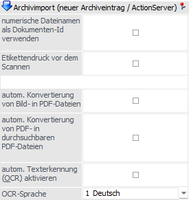
Ø numerische Dateinamen als Dokumenten-Id verwenden
Durch die Aktivierung dieser Option kann die Dokumenten-ID und die Dokumentenkreisnummer beeinflusst werden. Handelt es sich um eine zu archivierende Datei mit numerischem Namen, dann wird diese Nummer als Dokumenten-ID und Dokumentenkreisnummer verwendet. Hierbei sind folgende Punkte zu beachten:
ü Die Nummer "2099999999" darf nicht überschritten werden.
ü Ist neben der Datei mit numerischen Namen auch eine entsprechende Beschlagwortungsdatei vorhanden, dann wird die Option " numerische Dateinamen als Dokumenten-Id verwenden" automatisch außer Kraft gesetzt.
ü Bei einem Archivimport per Action Server werden Dateien mit alphanumerischen Namen nur dann importiert, wenn eine entsprechende Beschlagwortungsdatei vorhanden ist.
Beispiel
Es wird eine Word-Datei mit dem Namen "35000" importiert.
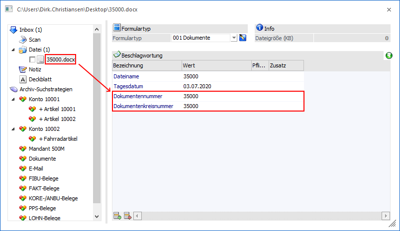
Hinweis
Bei einem erneuten Archivimport einer bereits importierten Datei (d.h. der Dateiname ist als Dokumenten-Id im Archiv bereits vorhanden) wird je nach Importvariante unterschiedliche verfahren:
ü Manuell (Neuer
Archiveintrag)
Die zu archivierenden Datei wird per Drag & Drop in
WinLine fallengelassen oder direkt in dem Programm "Neuer Archiveintrag"
geladen. Hierbei erfolgt eine Abfrage wie verfahren werden soll.
ü Automatisch (Action Server)
Die
zu archivierenden Datei wird in ein Windows-Verzeichnis abgelegt. Durch den
"WinLine Action Server" wird die Datei dann automatisch in WinLine importiert.
Hierbei findet automatisch eine Ersetzung des bestehenden Archiveintrages
statt.
Ø Etikettendruck vor dem Scannen
Wird diese Option aktiviert, so wird vor dem Scannen (Programm "Neuer Archiveintrag") immer ein Etikett gedruckt.
Ø automatische Konvertierung von Bild- in PDF-Dateien
Mit dieser Funktion erfolgt beim Hinzufügen eines neuen Archiveintrages in Form einer Bilddatei eine Umwandlung dieser in eine durchsuchbare PDF-Datei (= ein durch Texterkennung markierbare Datei). Diese neu erstellte Datei wird im Archiv gespeichert.
Ø automatische Konvertierung von PDF- nach durchsuchbaren PDF-Dateien
Durch Aktivieren dieser Option werden PDF-Dateien, welche als neue Archiveinträge hinzugefügt werden, in durchsuchbare PDF-Dateien konvertiert.
Ø automatische Texterkennung (OCR) aktivieren
Wird diese Option aktiviert, so wird bei neuen Archiveinträgen eine Texterkennung durchgeführt und der gesamte gefundene Text als Schlagwort "095 - Langtext" zur Beschlagwortung automatisch hinzugefügt.
Hinweise
In der Beschlagwortungstabelle werden dazu nur die ersten 255 Zeichen angezeigt. Im System wird der gesamte Text gespeichert.
Das Schlagwort "095 Langtext" darf nur einmal pro Archivdokument als Beschlagwortung verwendet werden. Entweder für den Text der automatischen Texterkennung oder für eine manuelle Vergabe des Textes.
Wird die Option "automatische Texterkennung (OCR) aktivieren" gesetzt, jedoch die Option "automatische Konvertierung von Bild- in PDF-Dateien" nicht aktiviert, ist eine Markierung in der Bilddatei und dadurch eine "automatische" Beschlagwortung möglich. D.h. es muss das entsprechende Schlagwort in der Schlagworttabelle ausgewählt werden, und mit einer "Rechteckmarkierung" im Bild der entsprechende Text markiert werden. Dieser markierte Text wird damit in die selektierte Beschlagwortungszeile hinzugefügt.
Ø OCR-Sprache
An dieser Stelle wird die OCR-Sprache (deutsch oder englisch) ausgewählt.
Register "Erweitert"
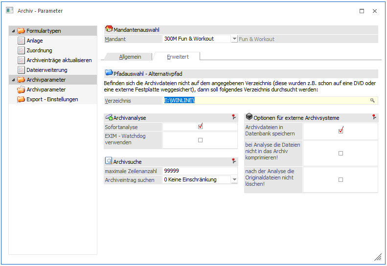
Pfadauswahl - Alternativpfad
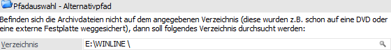
Ø Verzeichnis
Hier kann eingestellt werden, welches alternative Laufwerk (Verzeichnis) nach den Archivdateien durchsucht werden soll (weitere Informationen entnehmen Sie bitte dem Kapitel Archiv verschieben).
Archivanalyse
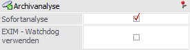
Ø Sofortanalyse
Durch die Sofortanalyse werden beim Drucken von Dokumenten diese im Hintergrund sofort analysiert. D.h. die Schlagwörter werden automatisch eingetragen und das Dokument sofort in die Datenbank verschoben.
Hinweis
Diese Option steht nur dann zur Verfügung, wenn die Option "Archivdateien in Datenbank speichern" aktiviert wurde.
Ø EXIM - Watchdog verwenden
Wird diese Option aktiviert, so kann die Archiv-Analyse über den sogenannten Watchdog automatisiert durchgeführt werden. Der Watchdog ist ein Programm, dass gewisse selbst zu definierende Aufgaben zu bestimmten Zeitpunkten oder in gewissen Zeitabständen durchführt.
Hinweis
Neben dem "EXIM - Watchdog" kann eine automatische Archivanalyse auch über den Action Server initiiert werden. Dort stehen, im Gegensatz zum Watchdog, noch mehr Möglichkeiten der Parametrisierung zur Verfügung.
Archivsuche
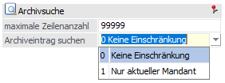
Ø maximale Zeilenanzahl
Auf die hier eingegebene Anzahl der Zeilen wird die Anzeige der Archiveinträge in der Archivsuche "Archiveinträge suchen" eingeschränkt.
Sind mehr als die angegebene Anzahl von Archiveinträgen vorhanden, so erscheint eine Meldung, dass die Ergebnismenge größer ist als die angegebene Zeilenanzahl sei und die Suche weiter eingegrenzt werden sollte.
Hinweis
Über den Button "Suche fortsetzen" kann die Suche trotzdem fortgesetzt werden.
Ø Archiveintrag suchen
Bei der Einstellung "1 Nur aktueller Mandant" erfolgt in dem Menüpunkt "Archiveintrag suchen" bzw. "Archiv Suche" nur in dem Mandanten die Dokumente gesucht / angezeigt werden. Die Einstellung erfolgt pro Mandant. Im Standard steht dies auf "0 - Keine Einschränkung".
Optionen für externe Archivsysteme
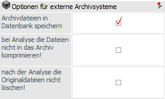
Ø Archivdateien in Datenbank speichern
Ist diese Option aktiv ist (Standard), dann werden bei der Archivanalyse die Archivdateien nicht mehr in die entsprechende .SPA-Datei komprimiert, sondern die Dateien werden am SQL-Server in die Tabelle T495CMP (System- oder Archivdatenbank) komprimiert abgespeichert. Bei den Archivsuchen wird dann wiederum das Dokument direkt aus der Datenbank ausgelesen und dargestellt.
Des Weiteren werden Archiveinträge, die über den Menüpunkt "Neuer Archiveintrag" erzeugt werden, sofort (nicht erst bei der Analyse) in der Datenbank gespeichert.
Ø bei Analyse die Dateien nicht ins Archiv komprimieren!
Wird diese Checkbox aktiviert, dann werden zwar alle Archiveinträge bearbeitet, es wird aber keine Archivdatei (.SPA) erzeugt. Diese Checkbox sollte nur dann aktiviert werden, wenn ein externes Archivierungsprogramm verwendet wird!
Ø nach der Analyse die Originaldateien nicht löschen!
Wird diese Checkbox aktiviert, so bleiben alle Dateien nach der Analyse (die eine komprimierte Datei erstellt) bestehen. Das bedeutet aber auch, dass mit der Zeit sehr viele unnötige Dateien auf dem Verzeichnis stehen bleiben.
Buttons
Ø Ok
Durch Drücken Buttons "Ok" bzw. der Taste F5 werden die getätigten Einstellungen gespeichert.
Ø Ende
Bei Anwahl des Buttons "Ende" bzw. der Taste ESC wird das Fenster geschlossen und alle nicht gespeicherte Einstellungen verworfen.
Ø Verzeichnisse zurücksetzen
Durch Anklicken dieses Buttons werden die beiden hinterlegten Verzeichniseinträge zurückgesetzt und können neu vergeben werden.
Ø Miniaturansichten erzeugen
Für alle noch nicht erzeugten Miniaturansichten (Thumbnails) können durch Drücken des Buttons diese erzeugt werden. Dabei werden zuerst alle Dokumente ermittelt die noch keine Miniaturansicht haben und im nächsten Schritt werden für alle ermittelten Dokumente die Miniaturansichten gebildet.